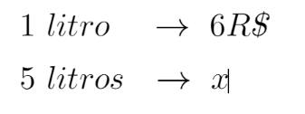
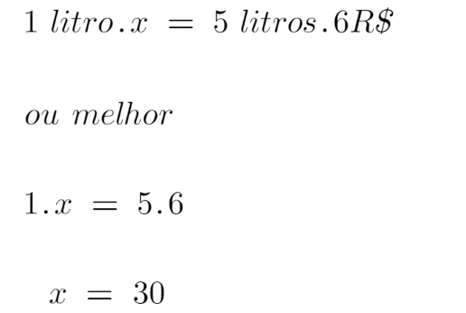
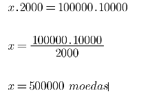
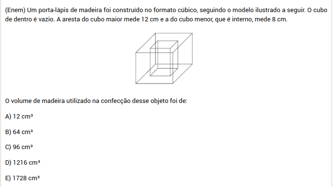

Se quiser pode ver outros artigos sobre outras materias:
Assuntos de Português
Assuntos de Ciências da Natureza
Assuntos de Ciências Humanas
Uma coisa importante na matemática no geral é a prática, assim você precisa resolver
muitas questões para ser bom. Contudo, a maioria das questões do ENEM apresentam conceitos
de matemática básica de uma forma difícil, porém não é impossível, pode estudar os assuntos que
mais caem e logo faça muitas questões relacionadas, com certeza garantirá muitos pontos
na prova desse modo. O importante é aprimorar os temas simples, mas, que caem muito, tais
como porcentagem, estatística e gráficos, geometria plana, entre outros, assim acertará muitas questões!.
Uma dica muito importante é focar na resolução de questões, ou seja, assistirá uma aula do
assunto e logo fará exercícios. Dependendo de seu nível, pode tentar com exercícios simples e ir acrescentando
dificuldade, quando se sinta preparado, pode usar como exercícios questões do ENEM.
Tópicos:
Proporção e Porcentagem
Pensemos no que é proporção com um exemplo: o preço de um suco de maçã é 5R$ o litro, assim
quanto mais litros compramos, devemos pagar mais. Com esse exemplo podemos definir proporção
como uma dependência entre duas coisas, tal que quando uma aumenta seu valor, a outra também
(note que no exemplo, o preço é maior apenas quando a quantidade de litros de suco é maior.)
Isso envolve o que conhecemos de regra de três, que nos permite saber um determinado valor de uma
proporção, olhe o exemplo:
Para isso podemos pensar na seguinte equivalência, 1 litro é igual a 6R$ e 5 litros é igual a "x",
assim o problema será resolvido quando descoberto "x"

Uma vez feito a relação, multiplicamos em forma de x, ou seja, o do canto esquerdo acima com o do inferior direito, e igualamos
com a multiplicação entre os outros dois que sobraram. Como temos:

Agora vamos praticar com uma questão do ENEM
Alternativa E, pois se há 6000 moedas a mais do que comprar dois pacotes de 50R$, então o pacote de 100R$ tem: 2000.2+6000=10000 gemas. Logo, temos: 2000 a cada 10000 gemas e 100000 moedas a cada x moedas do pacote de 100R$, com regra de três:

Depare que a questão pergunta quanto deve ser acrescentado de um pacote a outro, assim das 100000 moedas é acrescentado 400000 moedas para que x possa ser 500000.
Estatísticas e gráficos
A estatística é um dos conteúdos da Matemática mais presentes no dia a dia, e, pela sua importância, é um conteúdo bastante recorrente no Enem. As questões de estatística no exame cobram:
leitura e interpretação de gráficos e tabelas;
cálculo das três medidas centrais: moda, média aritmética (simples e ponderada) e mediana;
análise da dispersão dos dados de um conjunto conhecendo o seu desvio padrão.
O Enem espera que o possamos interpretar informações de natureza científica e social da leitura de gráficos e tabelas, realizando previsão de tendência e interpretação.
Alternativa C, pois a mediana são os valores no médio da lista ordenada das médidas, assim colocaremos todos em lista do menor ao maior:
1,84-1,90-1,90-1,91-1,92-1,94-1,98-2,01-2,03-2,05-2,09-2,11
Como temos dois valores centrais, vamos somar eles e dividir por dois:(1,94+1,98):2=1,96
Geometria Plana
Um dos conteúdos mais recorrentes do Enem, a geometria plana, sendo o meu favorito, aparece bastante na prova de Matemática por meio de questões que cobram desde os conteúdos básicos até os conteúdos mais avançados, como área de polígonos e o estudo de círculo e circunferência. Para se dar bem, é importante conhecer as fórmulas de área dos principais polígonos e reconhecer essas figuras.
Alternativa E, calcular a diferença entre a área dos dois círculos:
A2 - A1 = πR² - πr² = π (R² - r² )
r = 6 : 2 = 3
R = 14 : 2 = 7.
π = 3
Então:
A2 - A1 = 3 (7² - 3² )
A2 - A1 = 3 (49 - 9)
A2 - A1 = 3 · 40 = 120
Geometria Espacial
Já quanto às figuras espaciais, é importante conhecer as características das principais, a saber: prismas, pirâmides, cilindros, cones e esfera. Nos últimos anos, têm aparecido também questões sobre tronco de cone e tronco de pirâmide no Enem. Reconhecer os sólidos geométricos, as suas planificações, entre outras características, é fundamental, além do cálculo de volume e, em menor frequência, da área total desses sólidos.
Conhecer as unidades de medidas e as principais medidas da geometria também é importante para fazer a prova, pois, dentro da geometria, são bastante comuns questões envolvendo grandezas e medidas.
Como exemplo temos a seguinte questão:

Alternativa D, calcularemos o volume do cubo maior menos o volume do cubo menor. O volume de um cubo é a medida da sua aresta ao cubo, então temos que:
12³-8³ = 1728-512 = 1216 cm³
Funções
Equações do 1º grau e do 2º grau e equação exponencial podem aparecer na sua prova, tanto em questões que cobram somente esse conteúdo quanto naquelas em que aparecem com outros conteúdos.
Normalmente podemos ver também que a questão de juros compostos sempre envolve uma equação exponencial ou logarítmica e é geralmente uma questão difícil da prova. Já a relação entre grandezas pode ser expressa por meio de uma função. No Enem caem questões envolvendo função do 1º grau, função do 2º grau, funções trigonométricas, função exponencial e, com menor frequência, função logarítmica.
Esse tipo de questões são já um nível médio ou difícil da prova, então, há necessidade de muita prática nessas questões com função
Alternativa C, lembrando a forma da parabola, podemos saber que a altura é o maior valor possível de y, exatemente quando:
y=9
Também, a base da entrada é a distância entre as raizes, -3 e 3, assim a distância é 6. O retângulo tem área de:
6.9=54
E assim, a área da parábola é 2/3 da área desse retângulo. Assim
54.2/3=36
Obrigado pela leitura toda, esto tem sido todo, espero haver ajudado você a entender um pouco mais do que vai nessa prova, mas, se ficou confundido com as informações apresentadas aqui, pode buscar outros sites, informe-se e estude bastante. Desejo boa prova.
![O pacote básico de um jogo para smartphone, que é vendido a R$ 50,00, contém 2 000 gemas e 100000 moedas de ouro, que são itens utilizáveis nesse jogo. A empresa que comercializa esse jogo decidiu criar um pacote especial que será vendido a R$ 100,00 e que se diferenciará do pacote básico por apresentar maiores quantidades de gemas e moedas de ouro. Para estimular as vendas desse novo pacote, a empresa decidiu inserir nele 6000 gemas a mais, em relação ao que o cliente teria caso optasse por comprar, com a mesma quantia, dois pacotes básicos. A quantidade de moedas de ouro que a empresa deverá inserir ao pacote especial, para que seja mantida a mesma proporção existente entre as quantidades de gemas e de moedas de ouro contidas no pacote básico, é](q2.png)
![(Enem 2019) O quadro apresenta a relação dos jogadores que fizeram parte da Seleção Brasileira de voleibol masculino nas Olimpíadas de 2012, em Londres, e suas respectivas alturas, em metro.
Tabela: Bruninho 1,90 metros. Dante 2,01 metros. Giba 1,92 metros. Leandro 2,11 metros. Lucas 2,09 metros. Murilo 1,90 metros. Ricardinho 1,91 metros. odrigão 2,05 metros. Serginho 1,84 metros. Sidão 2,03 metros. Thiago 1,94 metros. Wallace 1,98 metros.
A mediana das alturas, em metro, desses jogadores é
Alternativas:
A) 1,90.
B) 1,91.
C) 1,96.
D) 1,97.
E) 1,98.](q3.png)
![(Enem 2019) Em um condomínio, uma área pavimentada, que tem a forma de um círculo com diâmetro medindo 6 m, é cercada por grama. A administração do condomínio deseja ampliar essa área, mantendo seu formato circular, e aumentando, em 8 m, o diâmetro dessa região, mantendo o revestimento da parte já existente. O condomínio dispõe, em estoque, de material suficiente para pavimentar mais 100 m2 de área. O síndico do condomínio irá avaliar se esse material disponível será suficiente para pavimentar a região a ser ampliada.
Utilize 3 como aproximação para π.
A conclusão correta a que o síndico deverá chegar, considerando a nova área a ser pavimentada, é a de que o material disponível em estoque
A) será suficiente, pois a área da nova região a ser pavimentada mede 21 m².
B) será suficiente, pois a área da nova região a ser pavimentada mede 24 m².
C) será suficiente, pois a área da nova região a ser pavimentada mede 48 m².
D) não será suficiente, pois a área da nova região a ser pavimentada mede 108 m².
E) não será suficiente, pois a área da nova região a ser pavimentada mede 120 m².](q4.png)
![(Enem 2016) Um túnel deve ser lacrado com uma tampa de concreto. A seção transversal do túnel e a tampa de concreto têm contornos de um arco de parábola e mesmas dimensões. Para determinar o custo da obra, um engenheiro deve calcular a área sob o arco parabólico em questão. Usando o eixo horizontal no nível do chão e o eixo de simetria da parábola como eixo vertical, obteve a seguinte equação para a parábola:
y = 9-x2, sendo x e y medidos em metros.
Sabe-se que a área sob uma parábola como esta é igual a 2/3 da área do retângulo cujas dimensões são, respectivamente, iguais à base e à altura da entrada do túnel.
Qual é a área da parte frontal da tampa de concreto, em metro quadrado?
a. 18
b. 20
c. 36
d. 45
e. 54](q6.png)